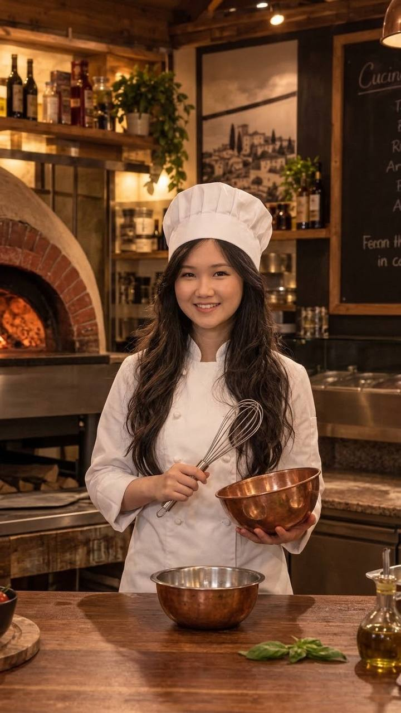
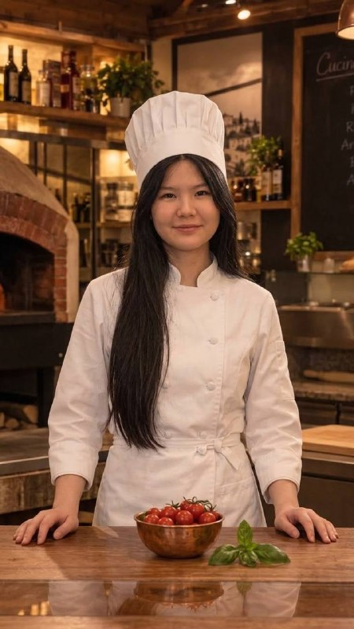
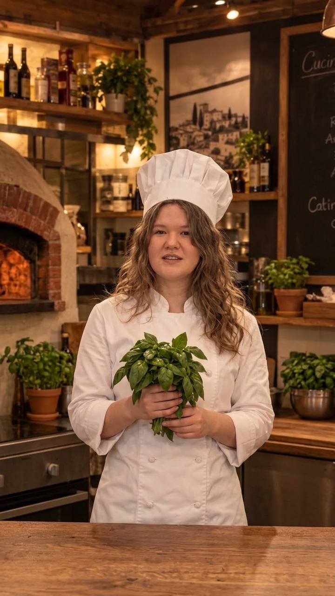

Akerke
Web Developer
Worked on the restaurant guide structure, page layouts, and core HTML architecture.
THE PEOPLE BEHIND THE PROJECT
Discover the creators behind Le Audaci and our curated Italian culinary guide.

Web Developer
Worked on the restaurant guide structure, page layouts, and core HTML architecture.

Content & Design
Designed the menu layouts, curated traditional recipes, and developed the visual identity of Le Audaci.

Web Developer
Organized restaurant catalog data, comparison tables, and user interaction details across the site.
Our mission is to bring authentic Italian gastronomy, traditional home recipes, and restaurant culture to food lovers around the world in a clean, modern, and engaging visual guide.